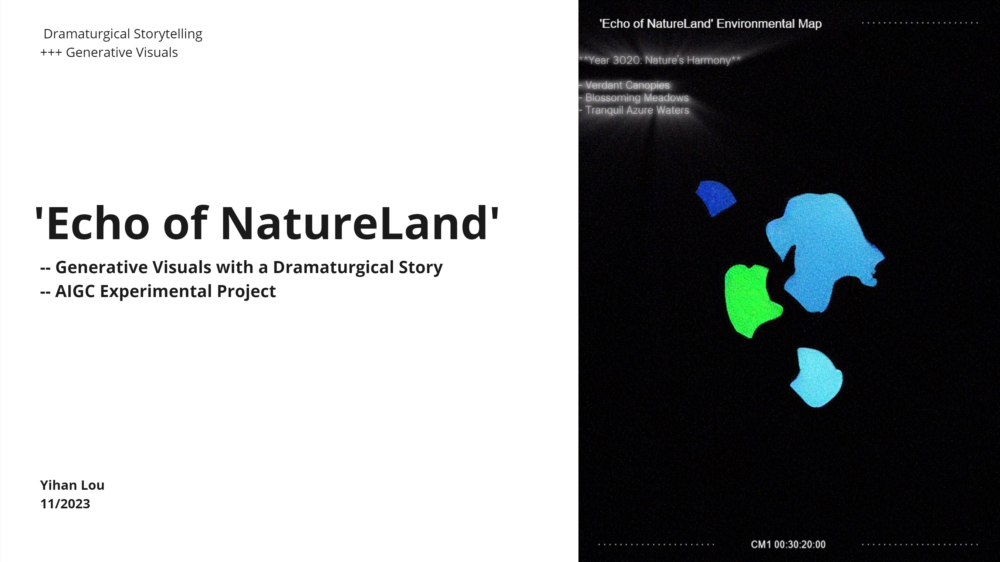
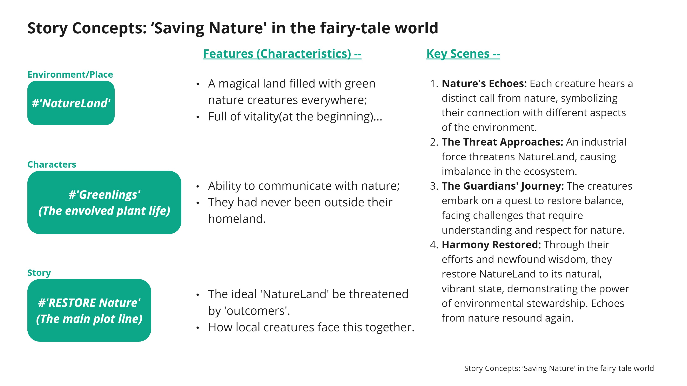
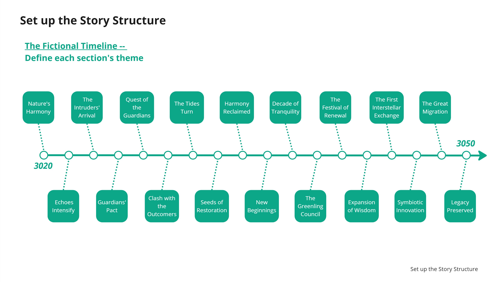
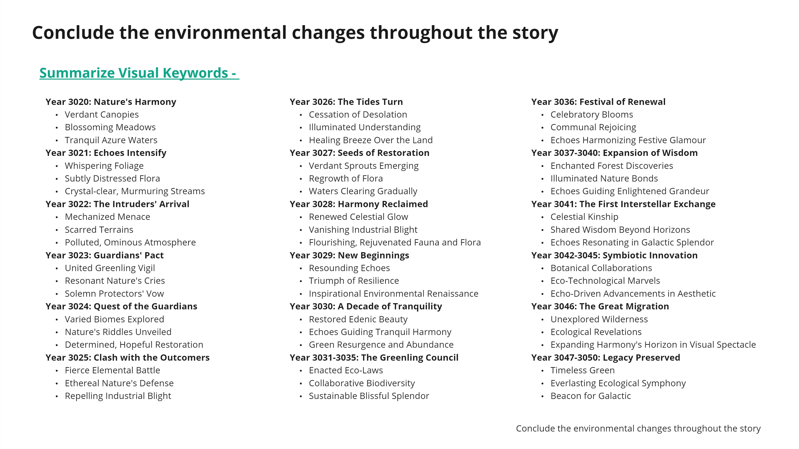
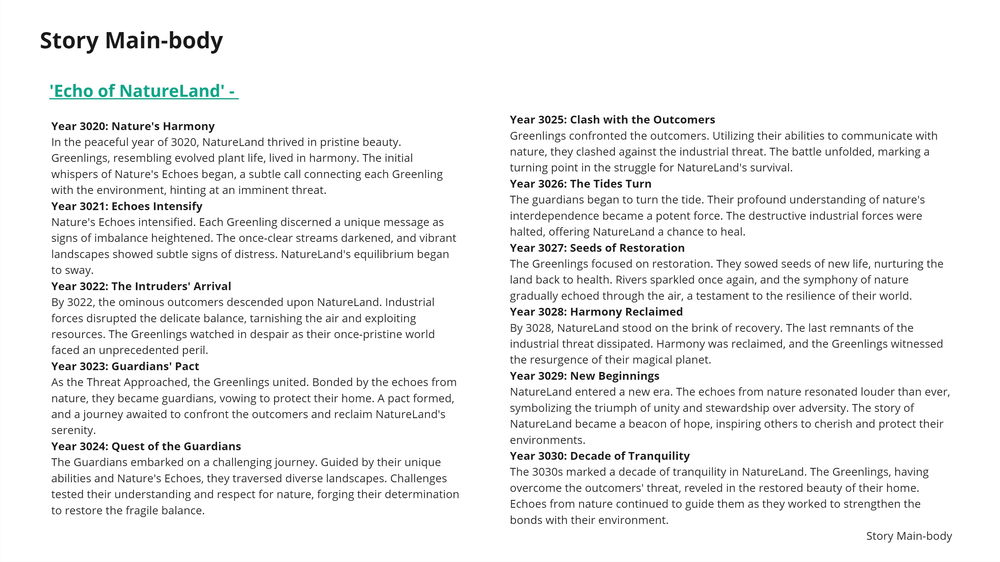
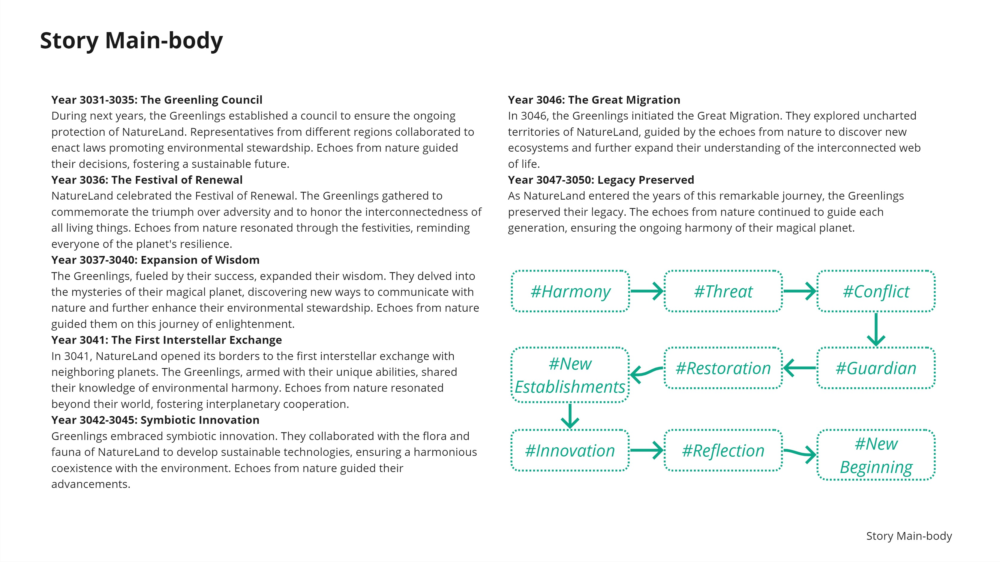
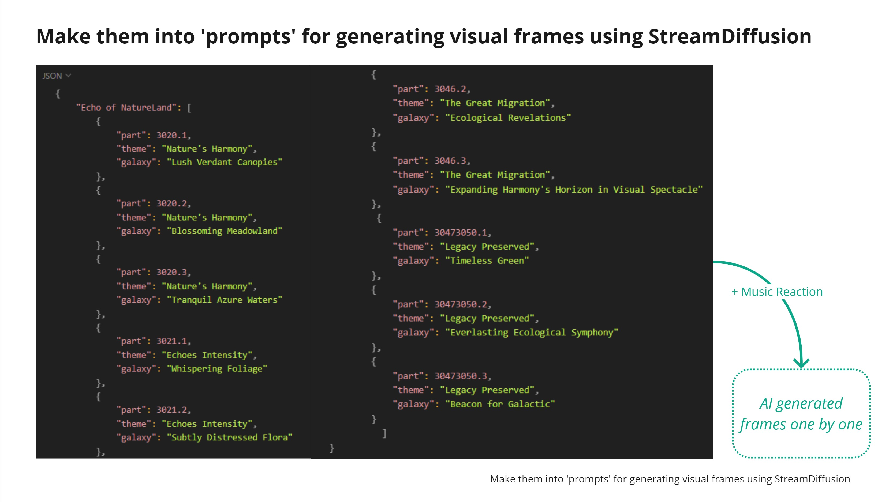
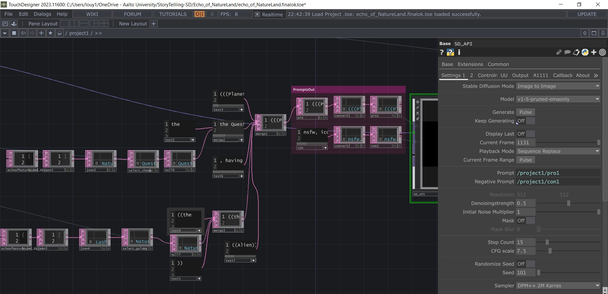
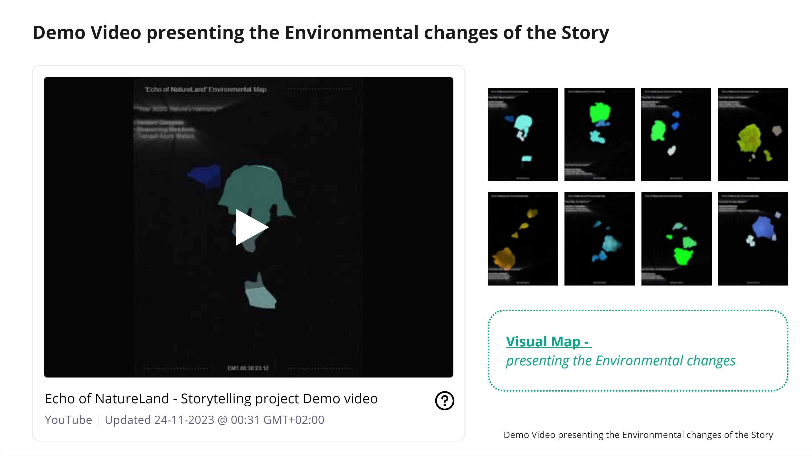

AI 生成影像最常见的失败之处在于它没有戏剧结构 —— 它只是一段情绪，能持续多久，取决于提示词有多长。Echo of Natureland 用相反的次序来回应：先写戏剧。一个完整的三十年环境寓言 —— 有世界、有角色、有冲突、有结局 —— 被编译成机器可读的提示词结构，之后才交由 AI 渲染成音频驱动的画面。顺序、节奏与环境的变化由叙事决定；模型只提供画面本身。
00结论摘要
这个项目是什么，以及它为什么成立Echo of Natureland 是一件从「写作」开始的 AI 实验作品。它构建了一个童话世界「自然之地（NatureLand）」， 其中生活着「绿灵（Greenlings）」—— 一种进化出听觉、能与自然对话的植物生命。在一条三十年的虚构时间线上（3020 → 3050），它们的家园被工业入侵者威胁、被守护者的盟约捍卫、最终得以复苏，并越出星球之外。故事写成之后，才被转译为结构化提示词， 以 AI 逐帧生成、实时呈现，并由配乐驱动画面的呈现时机。
- 戏剧先行，而且是完整的戏剧。作品不是为一种情绪写提示词，而是先写出一部完整的剧作 —— 世界、角色、情节、 四幕冲突与结局 —— 再把写成的故事本身当作生成的脚本。下游的一切，其结构都继承自写作，而不是来自一轮轮试提示词。
- 三十年是一条调度结构，不是修辞。时间线被切分为 18 个带年份的节点，它们的次序决定了场景的次序。 这正是让一件生成式作品能够被读成「有开端、有转折、有结局」的故事，而不是一串漂亮画面的原因。
- 在生成任何一帧之前，故事已被转译为视觉语言。每个节点被压缩为三个视觉关键词 —— 例如 3020 年「自然的和鸣」变成 Verdant Canopies · Blossoming Meadows · Tranquil Azure Waters。于是环境变化的方向 —— 从纯净、到受损、再到复苏 —— 是被刻意写定的，并且可以在一张表上读出来。
- 提示词是数据，而音频决定呈现的时机。关键词被编译成结构化的 JSON 提示词列表，由管线自动遍历 —— part → theme → galaxy —— 整条序列在 TouchDesigner 中以实时方式生成，并叠加一层音乐反应（music reaction）。画面回应的是配乐，而不是一段固定的剪辑。
| 作品形态 | 实时音频驱动的生成式影像 —— 一件 AI 实验短片 |
| 专业范围 | 叙事与戏剧结构 · 美术方向与视觉语言 · 提示词系统设计 · 实时生成管线 |
| 年份 | 2023 年（2023 年 11 月） |
| 作者 | Yihan Lou |
| 故事世界 | 「自然之地（NatureLand）」与「绿灵（Greenlings）」—— 进化出与自然沟通能力的植物生命 |
| 结构 | 三十年时间线（3020 → 3050）上的 18 个带年份节点；每个节点推导出 3 个视觉关键词 |
| 工具 | TouchDesigner 2023 中的 StreamDiffusion（SD_API）—— Stable Diffusion 图生图， 模型 v1-5-pruned-emaonly，512 × 512，15 步，CFG 7.5，DPM++ 2M Karras |
| 交付物 | 音频驱动的 AI 生成影像序列 · 作品演示视频 |
01设计视角
专业：叙事设计与美术方向支撑这个项目的是两件设计工作，而在做出它们的那一刻，两者都不是视觉决定。第一件是写一个像乐谱一样运作的故事：有序、带年份、 可以从头演奏到尾。第二件是把那个故事压缩成一种足够精确、可以交给模型的视觉语言 —— 这意味着，在任何画面被生成之前， 就要确定环境在每一个节点上的状态。
#NatureLand 自然之地
一片到处是绿色自然生灵的奇幻土地，起初充满生机 —— 也因此才值得失去。故事之所以有代价，正是因为开局被写成丰饶。
#Greenlings 绿灵
进化后的植物生命。它们能与自然沟通，并且从未离开过自己的家园 —— 这个设定，让后来的旅程有了「从何出发」。
#Restore Nature 复原自然
理想的自然之地被「外来者（outcomers）」威胁，本地生灵必须共同面对。这是一条「复原」的主线，而不是「征服」： 冲突在入侵者停止时结束，而不是在它们被消灭时结束。

- 自然的回响（Nature's Echoes）。每个绿灵都听见来自自然的一段独特呼唤，象征它与环境某一面向的连接。 正是这一装置让「聆听」成为故事的核心感官，也给了作品它的标题。
- 威胁临近（The Threat Approaches）。一股工业力量进入自然之地，生态系统的平衡随之瓦解。
- 守护者的旅程（The Guardians' Journey）。生灵们启程恢复平衡，所面对的挑战要求的是对自然的理解与尊重，而不是力量。
- 重获和鸣（Harmony Restored）。凭借努力与新的理解，自然之地回到生机勃勃的状态，来自自然的回响再次响起。 结局是一个状态，而不是一场胜利。
四个场景随后被扩展成一条既是时间线、也是作品乐谱的虚构年表。区间从 3020 年到 3050 年，被切成 18 个带年份的节点， 每个节点都有自己的主题 —— 从自然的和鸣，经入侵者降临、与外来者的冲突、复苏的种子， 直到大迁徙与传承永续。因为每个节点都带年份，整部作品中的环境变化就可以被标定出来 —— 而这正是下一步「视觉关键词」要做的事。

| 年份 | 节点主题 | 视觉关键词 |
|---|---|---|
| 3020 | 自然的和鸣 | Verdant Canopies · Blossoming Meadows · Tranquil Azure Waters |
| 3021 | 回响渐强 | Whispering Foliage · Subtly Distressed Flora · Crystal-clear, Murmuring Streams |
| 3022 | 入侵者降临 | Mechanized Menace · Scarred Terrains · Polluted, Ominous Atmosphere |
| 3023 | 守护者之约 | United Greening Vigil · Resonant Nature's Cries · Solemn Protectors' Vow |
| 3024 | 守护者的远征 | Varied Biomes Explored · Nature's Riddles Unveiled · Determined, Hopeful Restoration |
| 3025 | 与外来者的冲突 | Fierce Elemental Battle · Ethereal Nature's Defense · Repelling Industrial Blight |
| 3026 | 局势逆转 | Cessation of Desolation · Illuminated Understanding · Healing Breeze Over the Land |
| 3027 | 复苏的种子 | Verdant Sprouts Emerging · Regrowth of Flora · Waters Clearing Gradually |
| 3028 | 重获和鸣 | Renewed Celestial Glow · Vanishing Industrial Blight · Flourishing, Rejuvenated Fauna and Flora |
| 3029 | 新的开端 | Resounding Echoes · Triumph of Resilience · Inspirational Environmental Renaissance |
| 3030 | 宁静的十年 | Restored Edenic Beauty · Echoes Guiding Tranquil Harmony · Green Resurgence and Abundance |
| 3031–3035 | 绿意议会 | Enacted Eco-Laws · Collaborative Biodiversity · Sustainable Blissful Splendor |
| 3036 | 更新之节 | Celebratory Blooms · Communal Rejoicing · Echoes Harmonizing Festive Glamour |
| 3037–3040 | 智慧的拓展 | Enchanted Forest Discoveries · Illuminated Nature Bonds · Echoes Guiding Enlightened Grandeur |
| 3041 | 首次星际交流 | Celestial Kinship · Shared Wisdom Beyond Horizons · Echoes Resonating in Galactic Splendor |
| 3042–3045 | 共生式创新 | Botanical Collaborations · Eco-Technological Marvels · Echo-Driven Advancements in Aesthetic |
| 3046 | 大迁徙 | Unexplored Wilderness · Ecological Revelations · Expanding Harmony's Horizon in Visual Spectacle |
| 3047–3050 | 传承永续 | Timeless Green · Everlasting Ecological Symphony · Beacon for Galactic |
这是项目最核心的一次设计动作：把环境变化总结成一条视觉关键词序列，于是故事的生态弧线变成了一张可读的表 —— 从纯净，到 Mechanized Menace、Scarred Terrains，再到 Verdant Sprouts Emerging， 最终到 Timeless Green。一旦弧线成了一张表，它就是一个规格。视觉语言在向模型提出任何要求之前，就已经确定。

沿时间线读下去，这些节点收敛为九种情绪状态。这条推进就是整部作品的戏剧逻辑 —— 也正是画面所遵循的那条线。
最后，故事被逐节点完整写出 —— 交付的是叙事本身，而不只是提纲。每一条带年份的条目都说明了那一年世界里发生了什么， 这正是让配图能够被对照「文字」、而不是对照「情绪」来检验的原因。


扩散模型没有记忆，也没有次序感：为同一种情绪请求两次，得到的两帧不会属于同一个世界。项目的应对方式，是把所有依赖次序的决定 —— 顺序、升级、环境状态、节奏 —— 从模型里移出来，放回写作中，因为只有在那里它们才可被创作、可被修改。留给模型的是它真正擅长的一件事： 生成一帧符合描述的画面。戏剧结构不是加在生成之上的一层装饰；它正是让生成变得连贯的那部分系统。
02技术视角
专业：实时生成系统设计技术脊梁由三部分组成：一套机器可读的提示词结构、一个实时生成与合成画面的运行时，以及一层决定何时呈现某个节点的音频机制。 故事是输入；管线是一个沿着它行走的循环。
故事被编译为 JSON
每个节点被编译成一条结构化提示词记录，包含三个字段 —— part、theme、 galaxy。part 3020.1 携带主题「Nature's Harmony」与意象「Lush Verdant Canopies」； part 3021.1 携带「Echoes Intensity」与「Whispering Foliage」。因为故事按年份建立索引， 管线可以程序化地遍历它，而不必由人手反复重写提示词。
StreamDiffusion，逐帧生成
这些记录输入 StreamDiffusion —— 一条实时的 Stable Diffusion 图生图管线 —— 于是 AI 画面是在作品播放过程中一帧一帧生成的，而不是预先渲染成文件。模型为 v1-5-pruned-emaonly， 以 512 × 512、15 步、CFG 7.5、DPM++ 2M Karras 采样器运行。
在 TouchDesigner 中驱动
TouchDesigner 是宿主：一张节点图承担提示词的组装、调用 Stable Diffusion API，并把结果合成到实时输出中。 把提示词逻辑放在节点图里而不是脚本里，是让整条序列可以重新编排、重新播放、而无需重构建的原因。
音乐反应决定呈现时机
一层音乐反应（music reaction）与生成并列运行，把配乐送入管线，让画面回应音频。这正是作品「音频驱动」 而非「配乐」的原因：声音是节奏信号，而不是叠在成片之上的一条音轨。


预先渲染会让它变成一部需要排队等待的影片；实时生成让作品保持现场状态，音频才可能真正驾驶它， 作品也才可能作为一场演出运行。把故事序列化为 JSON，是同一思路在内容一侧的体现：一旦叙事是一种数据结构， 改变作品的次序、长度或意象，就是对数据的编辑，而不是重拍。两个选择服务于同一个目标 —— 让作品在播放的那一刻仍然可调。
| 不是游戏 | 没有胜负状态、没有分数、没有失败条件 —— 作品是一段会播放的序列，观众观看并聆听。 |
| 不是交互装置 | 它不感知观众、也不回应观众的动作；唯一的实时输入是配乐。 |
| 不是环境数据可视化 | 其中的环境变化是被创作出来的虚构，而不是实测的生态数据。生成的画面是美术方向，不是证据。 |
| 不是可漫游的 3D 世界 | 输出是一连串生成的画面，而不是一个观众可以在其中移动的场景。 |
03成果与验证
交付的成品，以及仍然开放的部分作品以一段演示视频的形式交付，呈现故事中的环境变化，并配有追踪这些变化的视觉地图。 这张地图就是故事弧线的可视化：3020 年时，几块陆地保有其完整的色彩；随着时间线推进，它们被工业的侵入逐渐污染、失色，随后恢复。

| 材料中可验证 | 完整的故事设定（世界、角色、18 个带年份节点、四个关键场景）；视觉关键词表；JSON 提示词结构； TouchDesigner 与 StreamDiffusion 的搭建及其生成参数；以及已交付的演示视频。 |
| 仍然开放 | 项目材料中没有量化评估或面向观众的测试，演示视频是唯一被记录下来的成果； 也没有任何展览或被委托的语境记录。 |
要把作品从「一件完成品」推进到「一件有证据的作品」，有三个实验值得做：
- 把戏剧结构拿去测试一个没读过它的人。让一位无法接触故事的观众观看序列，请他们复述出这条弧线。 如果他们复述不出来，说明叙事停留在文字里、还没有进入画面 —— 而视觉关键词这一段，正是修补的地方。
- 记录哪些节点最经得住模型。给管线加上逐节点的输出质量记录，让薄弱的节点在写作阶段被重写， 而不是在生成阶段被反复重提示。
- 让音频具备可证实的因果作用。把音乐反应的参数暴露出来，用同一组节点配两段不同的配乐运行； 如果剪辑在结构上并无差别，那音频只是为作品配了乐，并没有驱动它。